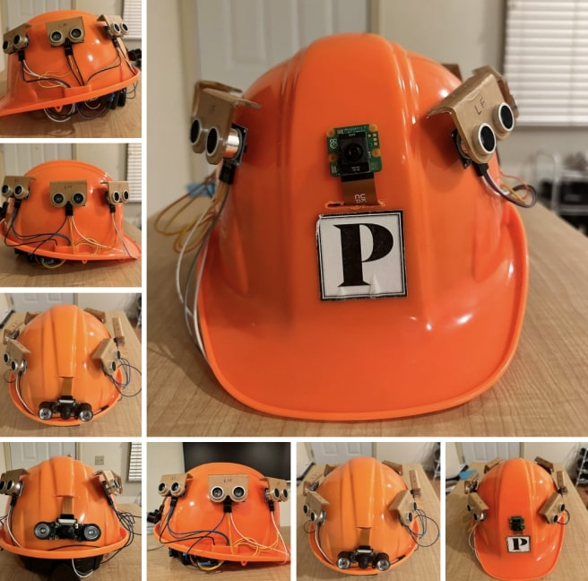

AI-Powered Smart Hat for Visually Impaired Navigation
GitHub Code
1. Overview
The Smart Hat Detection System is designed to monitor a physical environment using a Raspberry Pi. It leverages a Flask web server that is developed to expose multiple HTTP endpoints (using both GET and POST methods) to:
-
Control the Detection Process:
Start/stop detection and check the system status.
-
Manage Configuration:
Update and retrieve system settings via configuration files.
-
Log Detection Events:
Log events both locally (in a text file) and remotely in Firebase Firestore, ensuring robust data backup.
-
Trigger Audible Alerts:
Use the espeak command to produce voice alerts based on detection events.
Additionally, a custom HTML control panel provides a user-friendly interface to interact with all these endpoints, and ngrok is used to expose the local Flask server to the public internet without router configuration.
2. System Architecture
2.1. Physical Hardware Components
-
Raspberry Pi:
The central device running the detection code and Flask web server. It interfaces directly with the attached camera and ultrasonic sensors.
-
Camera Module:
Captures live video for detection and streaming. It is connected via the Raspberry Pi’s CSI port and supplies real-time images for processing.
-
Ultrasonic Sensors:
Multiple sensors (e.g., HC-SR04) are connected to the Raspberry Pi’s GPIO pins (for trigger and echo). These sensors measure distances to help trigger detection events.
-
Breadboard & Jumper Wires:
Used to connect the ultrasonic sensors to the Raspberry Pi reliably, ensuring proper wiring for sensor data collection.
-
Power Supply:
A dedicated 5V adapter (typically 3A or higher) ensures stable power delivery to the Raspberry Pi and connected components.
-
Optional Enclosure:
An enclosure or custom 3D-printed case can be used to house the Raspberry Pi, camera, and sensors for better organization and protection.
2.2. Software Components
-
Flask Web Server:
Runs on the Raspberry Pi and exposes multiple HTTP endpoints for system control and monitoring. You wrote both GET and POST endpoints to handle actions such as starting/stopping detection, configuration management, logging, and triggering alerts.
-
Firebase Firestore:
A cloud-based NoSQL database that stores detection logs remotely. Integrating Firebase Firestore to ensure that detection events are backed up and accessible for remote monitoring.
-
Ngrok:
A tunneling service that creates a secure, temporary public URL to expose your local Flask server to the internet. This allows remote access without router configuration.
-
Control Panel (HTML Interface):
A custom web page (control_panel.html) that you developed. It aggregates all your endpoints into one interface with buttons and links, using JavaScript (Fetch API) to send GET and POST requests.

3. Summary of Achievements
-
Integrated Hardware and Software
-
Assembled a Raspberry Pi-based system with a camera module and ultrasonic sensors for real-time detection.
-
Developed a Flask web server with multiple GET and POST endpoints to control the detection process, manage configurations, log events locally and remotely (via Firebase Firestore), and trigger voice alerts using espeak.
-
User-Friendly Control Panel
-
Created a custom HTML control panel that aggregates all commands, enabling easy system management without manually typing URLs.
-
Remote Accessibility
-
Used ngrok to expose the local server to the public internet, allowing remote monitoring and control from any internet-connected device.
-
Collaboration and Cloud Integration
-
Successfully integrated Firebase Firestore for remote logging, ensuring that detection events are backed up and accessible for analysis.
-
Overall System Workflow
-
The physical hardware continuously monitors the environment and processes real-time data.
-
Detection events are logged both locally and remotely.
-
The Flask server exposes endpoints for starting/stopping detection, retrieving system status, updating configurations, and triggering alerts.
-
The control panel and ngrok tunnel enable easy, remote access to the entire system.
4. Challenges Faced
-
Hardware Integration and Assembly
-
Component Connections:
Integrating the Raspberry Pi, camera module, and ultrasonic sensors required careful wiring on a breadboard. Ensuring that each sensor’s trigger and echo pins were correctly connected and testing multiple times to verify proper function was challenging.
-
Sensor Calibration and Reliability:
The ultrasonic sensors sometimes produced inconsistent readings. This necessitated calibration and adjustments in the code to handle timeouts and out-of-range values reliably.
-
Physical Mounting:
Finding a secure and optimal position for mounting the camera and sensors, along with considerations for an enclosure, was a hands-on challenge that impacted the overall detection accuracy.
-
Software-Hardware Synchronization
-
Real-Time Data Processing:
Combining live video capture and sensor data processing with the Flask server’s operations created timing challenges. Managing global variables and thread synchronization to ensure that detection tasks did not interfere with the web server required careful design.
-
Resource Constraints:
The Raspberry Pi’s limited processing power sometimes led to performance bottlenecks when running hardware-intensive operations alongside the web server and logging functions.
-
Firebase Firestore Integration
-
Authentication and Configuration:
Setting up the Firebase Admin SDK and correctly configuring the service account credentials was non-trivial. Ensuring the JSON key was in the correct format and had proper permissions posed initial challenges.
-
Data Logging Consistency:
Integrating remote logging to reliably push every detection event to Firestore required debugging and testing. Tackled issues such as network timeouts and data serialization were resolved, ensuring data integrity.
-
Remote Access Configuration with Ngrok
-
Tunnel Stability and URL Management:
While ngrok provided a fast solution for remote access, managing temporary URLs (which change with each session) was a challenge. This makes persistent access difficult without a paid plan.
-
Security Considerations:
Exposing endpoints to the public internet via ngrok required extra caution to balance accessibility with security measures.
-
User Interface (Control Panel) Development
-
Integrating Multiple Endpoints:
Developing a unified control panel to manage various endpoints (start, stop, status, config, detect, speak) was challenging. Writing robust JavaScript to handle GET and POST requests and ensuring clear, responsive feedback demanded multiple iterations.
-
Responsive Feedback:
Providing immediate and accurate responses via the control panel (such as alerts for successful commands or error messages) required careful design and testing to enhance the user experience.
← Back to Portfolio